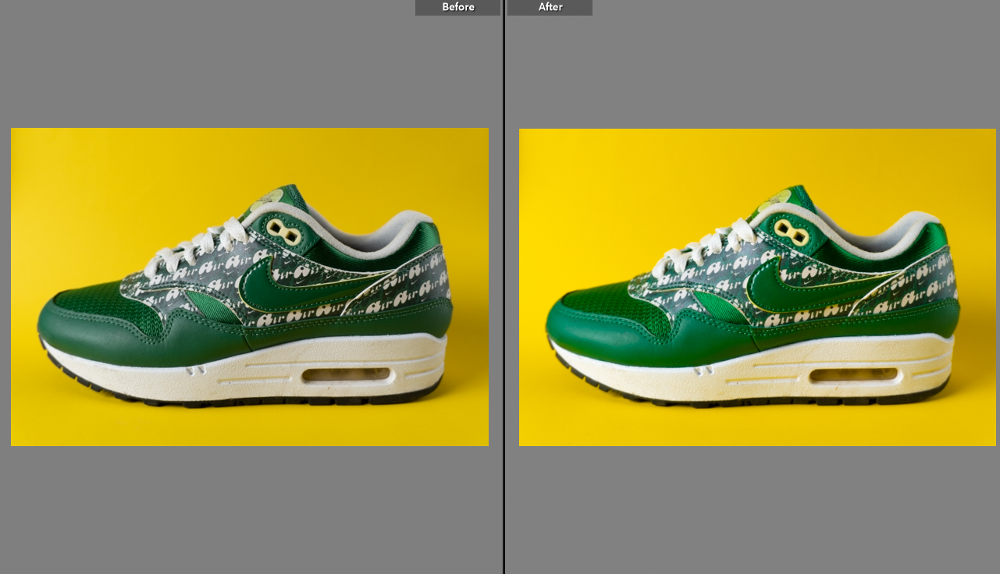
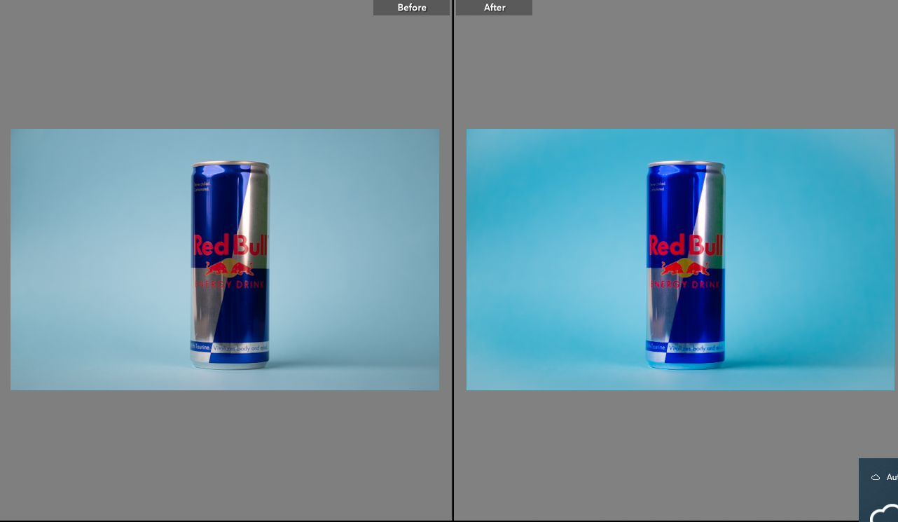

Foto & Redigering
I dette projekt har jeg arbejdet med især produktbilleder men også selvportrætter. Under dette projekt fik vi som klasse sat en dag af til at afprøve de forskellige redskaber der indebære, såsom professionelle kameraer og udstyr, således vi kunne få de bedste produktbilleder muligt.
Som det kan ses ovenfor er der blevet arbejdet med tripods, studielys, reflektorer og en baggrundsholder. Formålet med disse redskaber er at skabe det rette miljø med lys, skygger osv. for at få det klareste billede i bedste kvalitet og få alle detaljerne med. Nedenunder kan resultat ses efter der er blevet leget lidt med billedet i Adobe Lightroom. Det er meningen at man ikke skal kunne se for meget forskel ift. sine billeder, det skal nærmest falde ind naturligt når man ændre på produktbilleder.

Der er nedenunder flere eksempler på produktbillederne før og efter et "retouch" i Adobe Lightroom. Alle produkterne er blevet redigeret således at tonen passer til mooded, mere klarhed og farver der springer mere ud.

Jeg fik også taget portrætbilleder som jeg anvendte i denne portfolio, her skulle der især redigeres på skygger og farver, da mit mørke hår blender ind i den mørke baggrund: